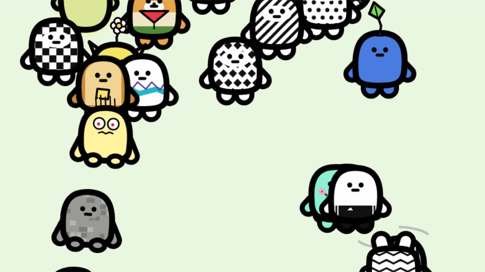
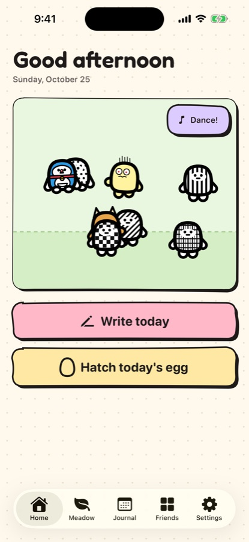
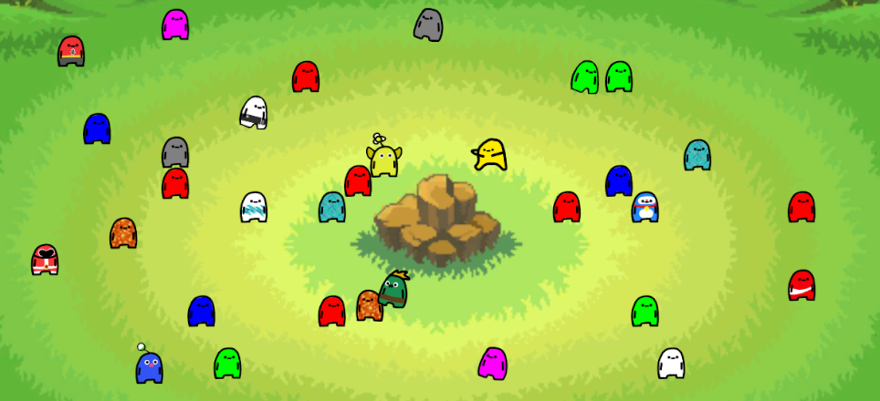

glhf grow [iOS]
The current version, rebuilt from scratch as an iOS app in SwiftUI. The idea is the same as the desktop prototype below — write something about your day, get a character for it — but this time the characters are the point. Each day you write hatches one, and it then wanders around a meadow with everything you have hatched before.

The sprites are generated rather than drawn, from a Python pipeline that renders every pose of every skin, so adding a character is a few numbers rather than a new set of files. That is what makes the collection viable: there are hundreds of them across four rarities, with patterns and accessories on top, and the whole roster shares one rig.

Behind it is offline-first sync on Supabase with Sign in with Apple, version-stamped so two devices editing the same day merge instead of overwriting each other. On top of the journal sit the things that make you come back: hidden personalities that change how a character behaves in the meadow, bot and online races, a focus timer that trains them, coins, a shop, seasonal items and a monthly recap. The next piece of work is end-to-end encryption, since the whole point of a journal is that nobody else reads it.
November went on the parts you look at. There are 19 finishes now across colour prints, epics and legendaries, including a night-sky set — aurora, meteor shower, great wave, constellations — that shimmer on a smooth 32-frame loop rather than stepping through it. The meadow draws only what is on screen, which is what lets it hold around 300 characters without the frame rate noticing, and it grows its own ground as the collection does. Races got one ghost per player riding their chosen racer, stats go to ten with training points that scale as a character ages, and the gym leads with a plain timer instead of explaining itself — two hours to a point, and you can use the rest of the app while it runs.

glhf - grow - desktop - journalapp
This started as a personal prototype, out of an interest in journaling and interactive design. The goal was a more engaging way to record daily experiences — turning journal entries into something visual and collectible. Once a day you create a moment: a small generated character standing in for that day's entry.
Each character works as both a memory marker and an interactive object. Open an entry to write freely, add reflections and upload an image, which turns each moment into a snapshot of the day. Everything is stored locally for now, since this is still a prototype focused on experimentation rather than long-term infrastructure.
Characters are generated as Common, Epic or Legendary, which adds a light collectible layer without making progression the point. At its core this is an experiment in blending game design with reflective journaling — seeing how interactivity and simple systems can make personal documentation more engaging. Future plans include a mobile version and more content.
blogs:
- #8: glhf-grow-desktop-journalapp [april26]
- #7: glhf-grow-desktop-journalapp [march26]
- #6: glhf-grow-desktop-journalapp [feb26]
- #5: glhf-grow-desktop-journalapp [jan26]
- #4: glhf-grow-desktop-journalapp [dec25]
- #3: glhf-grow-desktop-journalapp [nov25]
- #2: glhf-grow-desktop-journalapp [sept25 / oct25]
- #1: glhf-grow-journalapp [aug25]